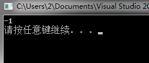

日常踩坑：一场C++实现KMP算法引发的"血案"
问题背景
KMP算法是一种优化后的字符串匹配算法，可以将复杂度由暴力匹配的O(m*n)降低到O(m+n)，具体原理就不再赘述，相信几乎任何一本算法书上面都会有KMP算法的详细介绍与实现。以前虽然学习过KMP算法，也清楚算法的原理，但是却从来没有完整实现过一次，闲来无事便打开Visual Studio准备使用C++独立实现一下。
代码如下：
1 |
|
我们使用如下代码对上述KMP算法正确性进行验证：
1 | int main() |
我们可以看到字符串”aac”是包含在”aabaacg”中的，KMP函数应该返回匹配点位置3，但是程序运行后却得到如下结果：

KMP函数返回值为-1，即没有在”aabaacg”中找到子串”aac”，显然这个结果并不正确。
问题查找
为了找到问题所在，我们单步执行跟踪函数的运行，跟踪结果表明，KMP函数中的循环（代码第25行）在k==-1的情况下退出了，显然这并不符合逻辑。在这个地方仔细想一下就能发现问题出现的原因，我们判断退出条件时使用了vector的成员函数length()获得字符串长度，length()函数返回值为size_t，也就是一个unsigned int类型的值，k的类型却为int，当int与unsigned int比较时，编译器会将int类型转换为unsigned int类型，所以当k==-1时就被转换为了最大的无符号整数INT_MAX，所以k<p.length()条件就不再满足，导致循环提前退出，最终导致函数逻辑出现错误。
问题解决办法为在循环前面定义两个int变量len_str和len_p，并将str和p的大小赋值给这两个变量，在循环中使用len_str和len_p替换str.length()和p.length()即可。
总结
这个错误完全是因为编码习惯不够严谨导致的，在C++中随手就会写出这种循环：
1 | for(int i = 0;i < p.length(); i++){ |
这种代码在 i >= 0 的时候可以运行良好，但是一旦出现i < 0的情况，就会导致意想不到的事情发生。
后面一定要改善自己的编码习惯，对于不同类型之间运算一定要仔细考虑默认类型转换，同时对编译器发出的”waring”引起足够的重视，虽然”waring”不会引起语法错误，但是可能会引起错误代价更大的逻辑错误。